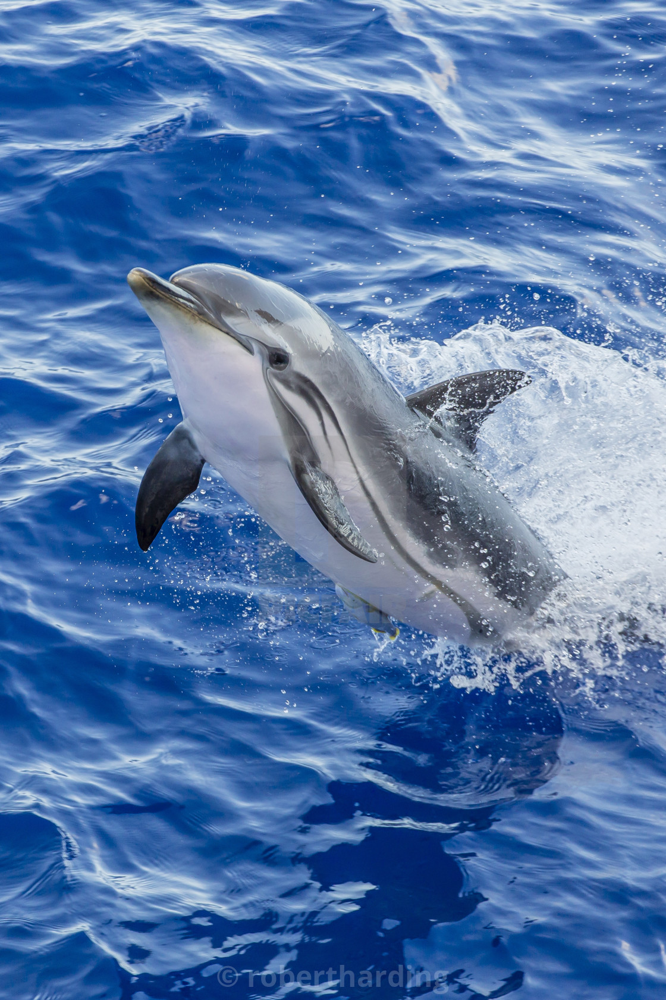

|  |
The striped dolphin (Stenella coeruleoalba) is an extensively studied dolphin found in temperate and tropical waters of all the world's oceans.
It is a member of the oceanic dolphin family, Delphinidae.
The striped dolphin has a similar size and shape to several other dolphins that inhabit the waters it does (see pantropical spotted dolphin, Atlantic spotted dolphin, Clymene dolphin).
However, its colouring is very different and makes it relatively easy to notice at sea. The underside is blue, white, or pink.
One or two black bands circle the eyes, and then run across the back, to the flipper. These bands widen to the width of the flipper which are the same size.
Two further black stripes run from behind the ear — one is short and ends just above the flipper. The other is longer and thickens along the flanks until it curves down under the belly just prior to the tail stock.
Above these stripes, the dolphin's flanks are coloured light blue or grey. All appendages are black, as well. At birth, individuals weigh about 10 kg (22 lb) and are up to a meter (3 feet) long.
By adulthood, they have grown to 2.4 m (8 ft) (females) or 2.6 m (8.5 ft) (males) and weigh 150 kg (330 lb) (female) or 160 kg (352 lb) (male).
Research suggested sexual maturity was reached at 12 years in Mediterranean females and in the Pacific at between seven and 9 years. Longevity is about 55–60 years.
Gestation lasts about 12 months, with a three- or four-year gap between calving.
In common with other dolphins in its genus, the striped dolphin moves in large groups — usually up to thousands of individuals in number.
Groups may be smaller in the Mediterranean and Atlantic. They may also mix with common dolphins. The striped dolphin is as capable as any dolphin at performing acrobatics — frequently breaching and jumping far above the surface of the water.
Sometimes, it approaches boats in the Atlantic and Mediterranean, but this is dramatically less common in other areas, particularly in the Pacific, where it has been heavily exploited in the past.
Striped dolphins are known as “streakers” throughout the eastern tropical Pacific due to their behavior of rapidly swimming away from vessels to avoid collisions
|